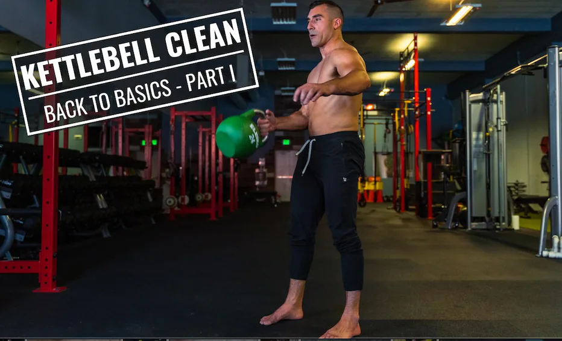

B244 · Kettlebell Clean, Back to Basics (Part 1)
Hi {first_name},
The Kettlebell Clean... you either love it or you hate it.
Am I right?
What I find is that for those people who hate performing the Clean, it is typically because they have not yet developed the technical skill to do it properly. The unfortunate consequence of this is often bruised forearms.
Over time, one of three things will happen:
My goal today is to have you understand unique aspects of this movement, and help you avoid points 2 & 3 above.
 In this week's Youtube video, I share a simple and effective drill to help you transition from the Swing to the Clean and get you rocking and rolling at a high level. If you can learn the Clean well, what you'll find is you'll be able to enter into the rack position (a key intermediary step in many kettlebell movements) with greater ease and grace.
Click here to watch the full Part I video.
If you are enjoying these Youtube videos, I would greatly appreciate it if you would subscribe to my channel and leave a comment on how it is benefitting your training.
Stay strong and have an awesome evening, Mike
P.S. Stay tuned for Part II of this series, where I share fundamental concepts of how to perform a different style of kettlebell clean more focused on developing strength endurance! |